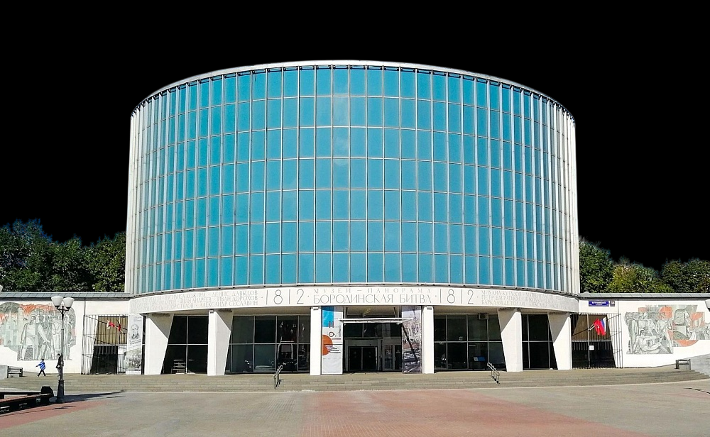
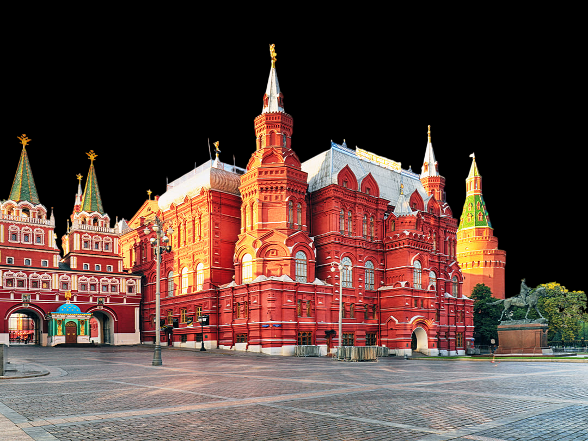
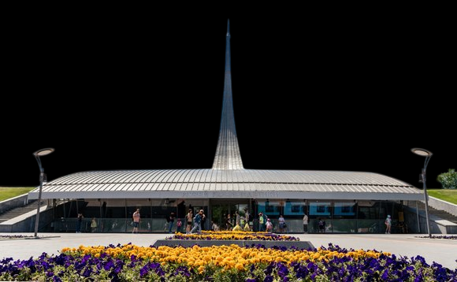
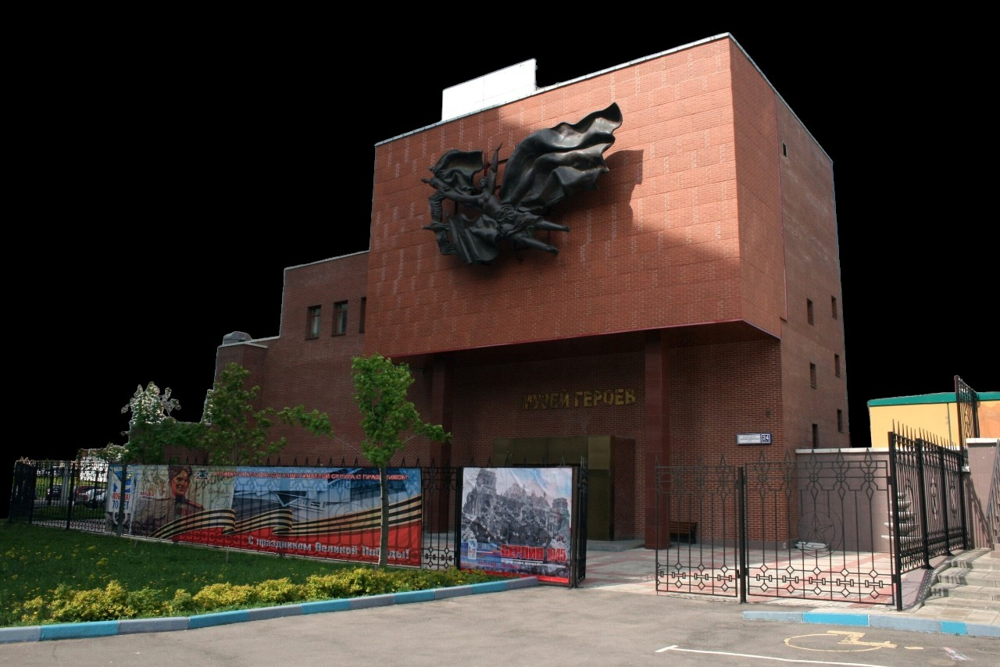
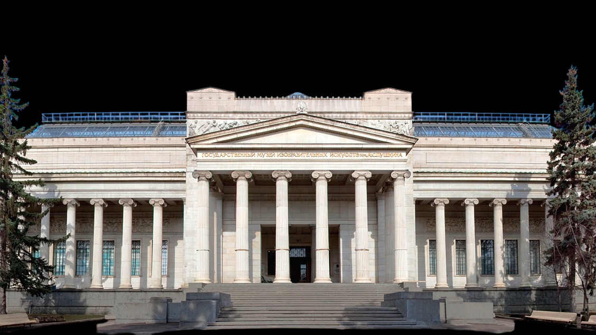
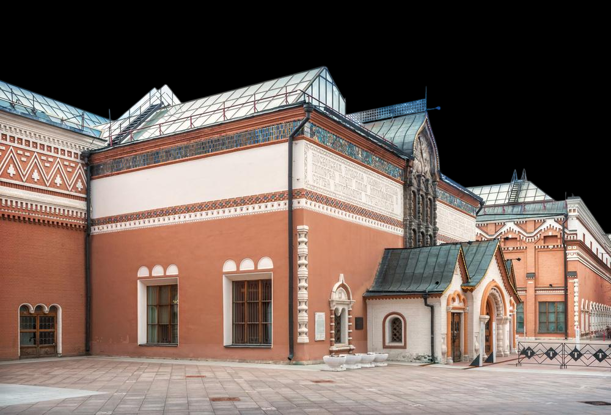
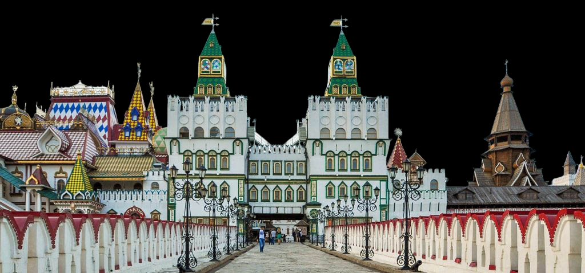

Москва
Известные музеи Москвы
Список работающих музеев Москвы по понедельникам очень большой, расскажем про самые интересные. Имейте в виду, что 'Третьяковка' по понедельникам не работает, также как и ГМИИ им. Пушкина, Дарвиновский музей, Музей космонавтики и Музей-заповедник Царицыно.
С 2022 года многие московские музеи обновили свои графики по бесплатному посещению. Учтите, что на некоторых сайтах информация могла устареть, а это актуальная информация.
Самым посещаемым музеем Москвы является Третьяковская галарея. В год музей посещают около 1,5 миллионов человек. Здесь хранятся многие шедевры мировой и русской живописи. Если хотите узнать какие именно, тогда читайте статью о Третьяковской галерее.


Музей-панорама «Бородинская битва»
📍Адрес: Кутузовский просп., д. 38, стр. 1, Москва, 121170
👨Архитектор: Д.М. Струков
🕑Год: 1962
Музей-панорама «Бородинская битва» - исторический музей, расположенный в столице России и освещающий события Отечественной войны 1812 года. Музей представляет собой целое собрание, которое состоит из панорамы Бородинского сражения, коллекции живописи и уникальных рукописей.
Панорама Бородинского сражения - работа, написанная Францем Рубо в 1911-1912 годах. Он получил личный заказ от императорского двора. Над большим полотном Рубо трудился на территории Мюнхена вместе с Иваном Мясоедовым, Борисом Колюбакиным и Беккером.

Государственный исторический музей
📍Адрес: Красная пл., 1, Москва, 109012
👨Архитектор: Владимир Шервуд
🕑Год: 1883
ГИМ в Москве - один из величайших в мире музеев, и один из самых больших исторический музеев России, в котором собраны главные сокровища Москвы - основа, с которой началась и зародилась Россия.
Музей посвящен истории России с древних времен до наших дней. Коллекция ГИМа насчитывает более 4,5 млн музейных предметов,
таких как ларцы, златник князя Владимира Святославича, головы драконов, шахматы из археологических раскопок, наблюдая которые, можно ответить себе на главный вопрос: "Почему Россия стала великой страной?"

Музей космонавтики
📍Адрес: пр-т Мира, 111, Москва, 129223
👨Архитектор: Б.Г.Бархин
🕑Год: 1981
Историю одного из наиболее крупных и значимых для мировой науки музеев принято отсчитывать с 1964 года, когда на ВДНХ появился монумент «Покорителям космоса». Он ознаменовал собой начало новой эры, когда далекие галактики оказались доступны простому человеку.
Первая же полноценная экспозиция Музея космонавтики была открыта в 1981 году и состояла из документальных материалов, снаряжения и одежды космонавтов.

Музей Героев Советского Союза и России
📍Адрес: Большая Черемушкинская ул., 24 корп. 3, Москва, 117218
👨Архитектор: Отсутствует
🕑Год: 1934
Музей впервые открылся для посещений весной в 2002 году. По разрешению властей Москвы было построено новое здание в 2006 году. Объект состоял из 3-х этажей, которое было оснащено одним из самых современных оборудований на тот момент.
В холле можно увидеть красную звезду. Этот армейский символ практически копия высшего звания России и Советского Союза. Это место полностью соответствует фразе генерала российской армии.

Музей изобразительных искусств имени А.С. Пушкина
📍Адрес: ул. Волхонка, 12, Москва, 119019
👨Архитектор: Роман Иванович Клейн
🕑Год: 1912
Этот музей был открыт в 1912 г. Здание, построенное для него архитектором Р. И. Клейном, стало одним из самых красивых в столице России - с фасадом, украшенным колоннами в греческом стиле, и лестницей из розового мрамора. Основателем и первым директором нового музея был известный филолог и искусствовед Иван Владимирович Цветаев (1847-1913), отец русского поэта Марины Цветаевой. Ему удалось привлечь пожертвования на строительство музея. А главным меценатом стал владелец стекольных заводов Ю. С. Нечаев-Мальцев.
Поначалу основу коллекций составляли гипсовые слепки со знаменитых скульптур начиная с античных времен и до эпохи Возрождения. С момента основания в музее хранится и богатейшая «египетская» коллекция подлинных памятников культуры и искусства Древнего Египта, принадлежавшая русскому ученому B. C. Голенищеву.

Государственная Третьяковская галерея
📍Адрес: Лаврушинский пер., 10, Москва, 119017
👨Архитектор: Виктор Михайлович Васнецов
🕑Год: 1856
Будто затейливые терема из русской сказки стоят в Замоскворечье здания Третьяковской галереи, главный фасад которой оформлен в 1901-1902 годах по проекту художника В. Васнецова. Надпись у входа, выполненная старинной вязью, гласит: «Московская городская художественная галерея имени Павла Михайловича и Сергея Михайловича Третьяковых. Основана П.М. Третьяковым в 1856 году и передана им в дар г. Москве совместно с завешанным городу собранием С. М. Третьякова».
Очень трудно поверить в то, что такой огромный музей мирового значения начал существовать благодаря усилиям всего лишь одного человека – П.М. Третьякова.

Музей хлеба
📍Адрес: Измайловское ш., 73ж, Москва, 105187
👨Архитектор: Отсутствует
🕑Год: 1983
Сегодня мы отправимся в Измайлово. В 17 веке здесь была царская резиденция. К сожалению, большинство ее построек не сохранились к нашему времени. В 97 году здесь началось строительство Измайловского Кремля. Он создавался на основе архитектурных мотивов того самого дворцового хозяйства, которое находилось в этих местах. Измайловский Кремль – это целый город. Прогуляться по его улицам очень интересно, но еще лучше, зайти в один из теремов. Мы заглянем в музей хлеба.
Здесь можно увидеть всевозможные батоны, булочки, караваи, баранки и не только, ведь в музее представлена многовековая история промысла в нашей стране. В музее представлены предметы крестьянства 19 века. Естественно, все делалось вручную. Присутствуют орудия труда, такие как соха, плуг, а также есть такие экспонаты как посуда. Звучит вроде бы просто, но посуда сделана вручную из дерева. С помощью этой посуды женщины делали тесто, а затем выпекали хлеб.
